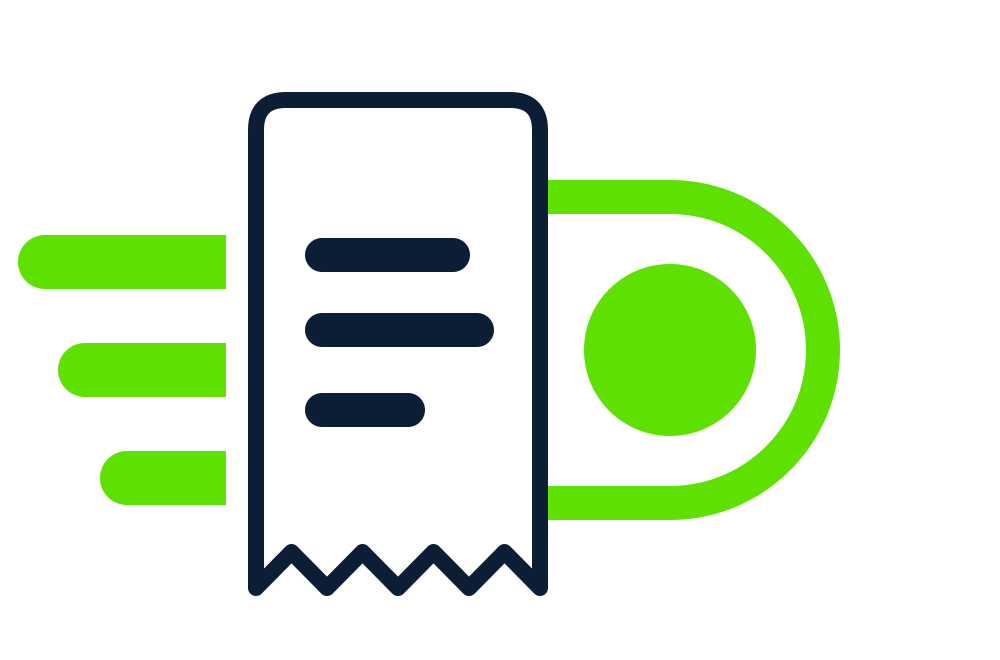
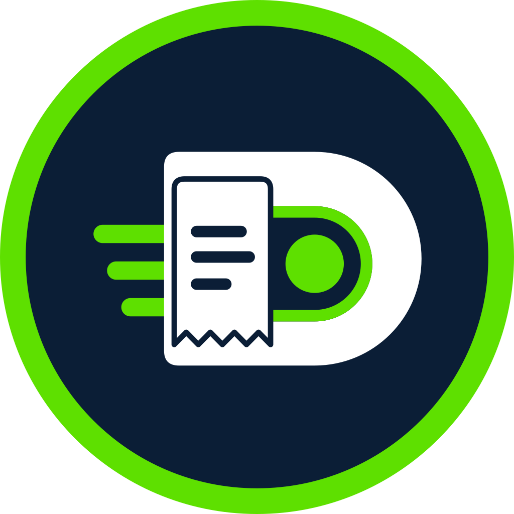
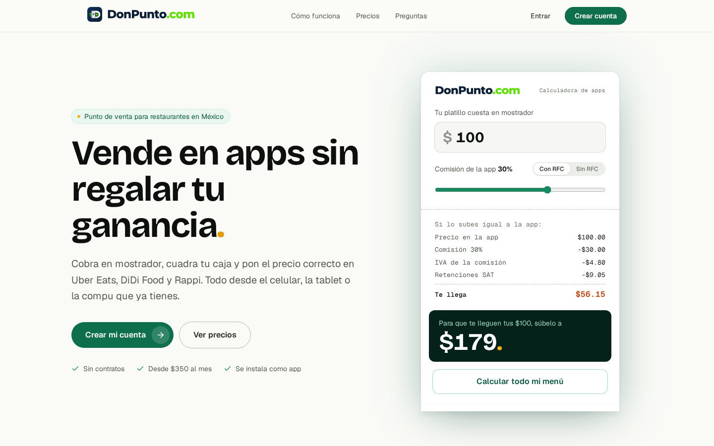
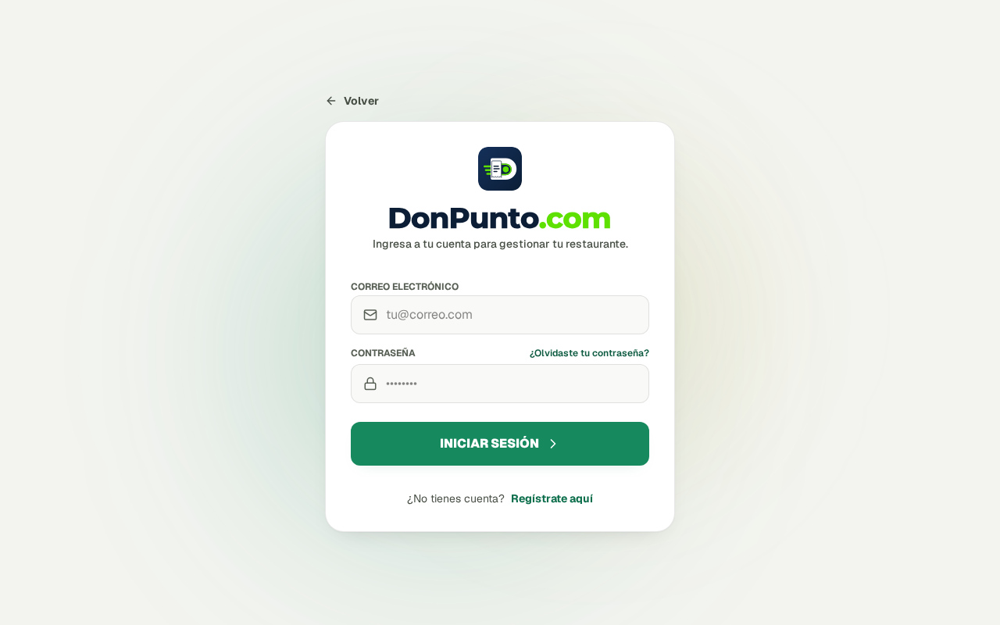
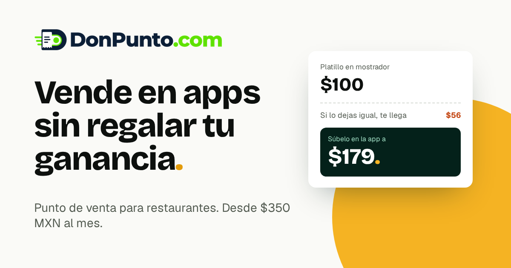

Ícono · fondo oscuro · PNG
App / favicon · PNG 1024

Círculo (perfil redes) · PNG
Horizontal blanco · PNG
Solo texto
Solo texto · fondo oscuro

Inicio donpunto.com

Login del POS

Imagen al compartir link (WhatsApp/FB)